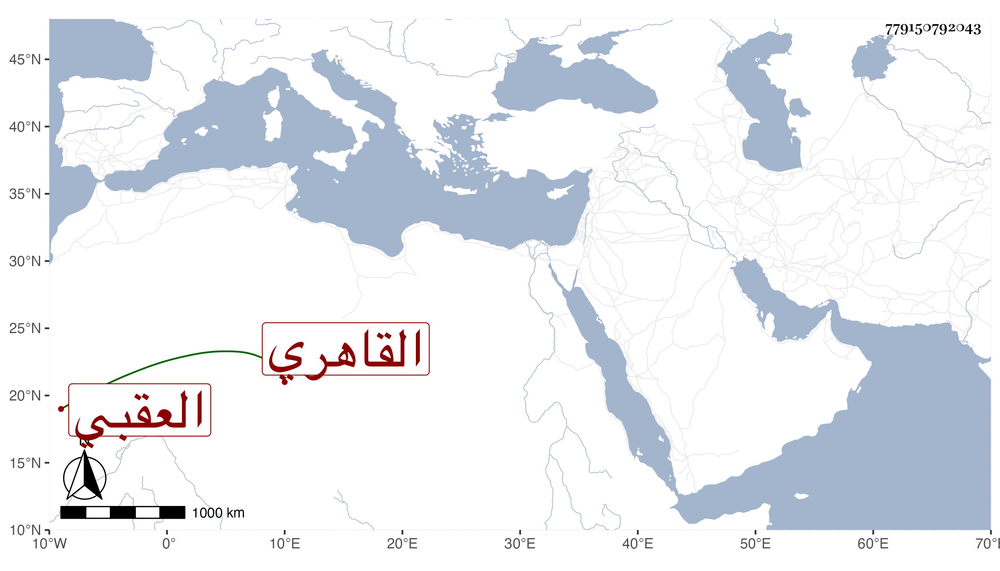

0902Sakhawi.DawLamic.ITO20230111-ara1.EIS1600.779150792043
Biography ID: 779150792043
46
أمة الخالق ابنة الزين عبد اللطيف بن صدقة بن عوض العقبي ثم القاهري شقيقة عبد الكريم وأخت محمد لأبيه الماضيين . احضرت في الرابعة سنة ست عشرة على الجمال الحنبلي بعض فوائد تمام وقطعة كبيرة من سيرة ابن هشام ومن مسند أحمد بل سمعت عليه في الغيلانيات وغيرها ، وأجاز لها عائشة ابنة ابن عبد الهادي وآخرون وأثبتها شيخنا رضوان أجازت لنا وكانت صالحة كاتبة فاضلة مديمة للتلاوة في المصحف بل حفظت بعضه وبعض المنهاج الفرعي وجميع ألفية ابن مالك وغير ذلك ؛ وحجت ومات زوجها الشرف الديسطي في طاعون سنة ثلاث وثلاثين فلم تتزوج بعده واقامت بتربة الزمام حتى ...
